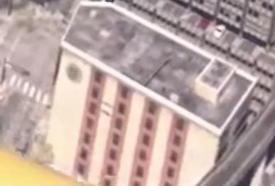

Bâtiment identifié, Downtown
111 SW 3rd St Fl 3 (nom réel)
111 SW 3rd St Fl 3 sur la carte de GTA VI : bâtiment, aperçu dans un support officiel, dans le quartier Downtown, la ville de Vice City.

L’essentiel
Ce bâtiment n’a pas encore de nom connu dans GTA VI : la communauté le désigne par son adresse réelle, 111 SW 3rd St Fl 3. Il est placé dans le quartier Downtown, la ville de Vice City. Statut : aperçu dans un support officiel (visible ou nommé dans un trailer, une capture ou une image officielle, sans description publiée par Rockstar). Lieu réel qui semble l’avoir inspiré (repérage de la communauté) : 111 SW 3rd St Fl 3, Miami, FL 33130, USA. Une capture officielle le montre : elle est reprise ci-dessus, avec son crédit. Les lieux les plus proches sur la carte : 140 W Flagler St (nom réel, au nord), Parking Lot (au sud), Bâtiment L2818 (à l’est).
Identité
| Nom | 111 SW 3rd St Fl 3 (nom réel, nom en jeu inconnu) |
|---|---|
| Catégorie | Bâtiment identifié |
| Quartier | Downtown |
| Ville | Vice City |
| Statut | Aperçu dans un support officiel |
| Lieu réel qui semble l’avoir inspiré | 111 SW 3rd St Fl 3, Miami, FL 33130, USA (repérage de la communauté) Voir sur Google Maps ↗ |
| Position sur la carte | x 3440, y 3266 (centrer la carte) |
| Source | Captures et trailers officiels ; repérage de gtadb.org et ses contributeurs (CC BY 4.0) |
Sur la carte de Leonida

Données : GTA VI Landmarks Data, gtadb.org et ses contributeurs, CC BY 4.0, modifiées pour Leonidakit. Licence : creativecommons.org/licenses/by/4.0
Lieux les plus proches sur la carte
Signaler une erreur sur cette pageCe qui est confirmé et comment on le vérifieProvenance et crédits
Le calculateur
Combien de temps de jeu pour t’installer par ici ?
Une maison, un commerce, un garage : écris le prix que tu imagines, ton argent et ce que tu gagnes par partie, le calculateur te dit le temps qu’il faut.